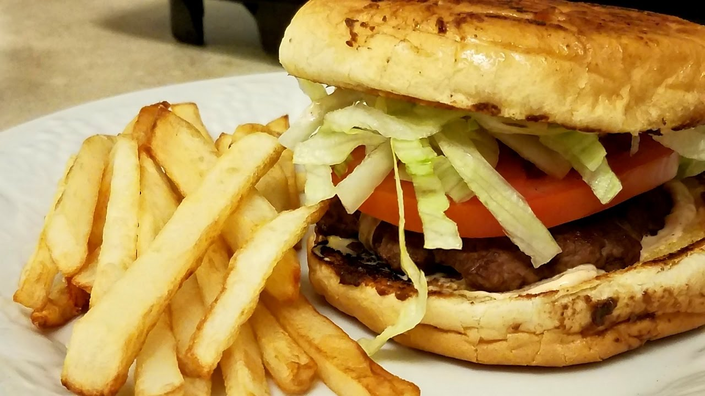

Fiche détaillée de la franchise de Val-Jalbert Québec
Absolument délicieux. Je ne suis pas végétalienne et c’était de loin l’un des meilleurs repas
que j’ai pris à Val-Jalbert. Prenez le « hamburger » de la maison avec des frites de patates douces ou le « fromage grillé ». Nous étions là pour un déjeuner tardif un lundi et le service était amical et rapide. L’intérieur est également magnifique.
J’adorais tout à ce sujet !
– Sarah O’Maillet
Si vous voulez voir tous les critiques, veuillez cliquer sur le bouton "Voir toutes les critiques"
Voir toutes les critiquesGallerie photo
Le restaurant Vegane est situé sur le chemin Chambly, à l’angle du boulevard Gaétan Boucher, dans le quartier de St-Hubert, Val-Jalbert.
Vous aimerez l’ambiance accueillante, l’excellent service et les portions généreuses de pâtes, sandwichs végétariens et plats de légumes!
De plus, chez Vegane, on vous sert toujours de succulents petits déjeuners!
Si vous planifiez une réception ou une réunion privée, d’affaires de famille ou entre amis,
profitez des salles privées qui peuvent accueillir jusqu’à 100 convives.
Vous serez tout simplement enchantés de votre visite!
Localisation de la franchise
500 rue de la Montagne, Val-Jalbert, QC G8G 1M7